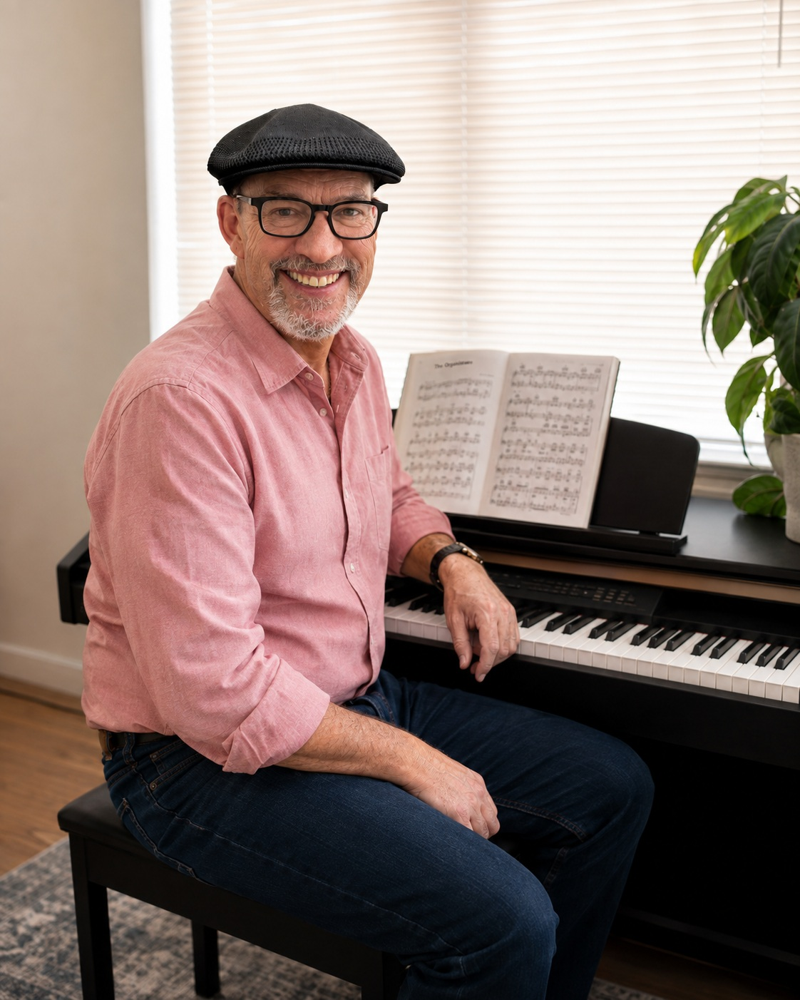

Learn to play
Begin at a comfortable pace with supportive instruction for children, teens, and adults.
● Glendale, Colorado · Serving the Denver Metro Area
Whether you’re a child just beginning, a teen building skills, an adult learning for the first time, or a returning player, I offer warm, encouraging instruction tailored to your goals.
Begin at a comfortable pace with supportive instruction for children, teens, and adults.
Build confidence, musicianship, and enjoyment at every stage of your piano journey.
Choose studio lessons in Glendale or schedule an in-home lesson throughout the Denver metro area.
About Me
Welcome! I’m a retired music educator, professional pianist, and published composer who has spent a lifetime making and teaching music. After many rewarding years teaching students of all ages, I continue to enjoy helping children, teens, and adults discover the joy of playing piano.
Every student brings unique goals, interests, and experiences, and I believe lessons should be encouraging, flexible, and centered on the music that inspires you. Whether you’re beginning for the first time, developing your skills, or returning after years away, I’d be delighted to help you reach your goals.
I hold a bachelor’s degree in Music from Western Washington University and graduate work in Choral Conducting from Oklahoma State University. My decades of teaching and performing experience inform a practical, patient approach that meets you where you are and helps you grow.
Hear more: Visit my YouTube channel to see and hear some of my work.

Who I Teach
New to piano? Wonderful. Children, teens, and adults can all start with a strong foundation. We’ll build skills step by step and keep the experience relaxed, clear, and encouraging.
Already have some experience? We’ll strengthen reading, technique, rhythm, musical expression, and confidence while exploring music that keeps you motivated.
Returning after time away or ready to go deeper? We can focus on polish, interpretation, technique, repertoire, improvisation, and playing with greater freedom and confidence.
What You’ll Learn
Your lessons are tailored to your interests, goals, and tastes. We’ll focus on the music you love while building a strong foundation of skills that can serve you for years to come.
Lessons are always tailored to your interests.
Why Students Enjoy My Lessons
My teaching is supportive, encouraging, and centered on you. You set the pace, and we celebrate progress—large and small.
Lesson Options
Rates
$30 / 30 minutes
$50 / 60 minutes
Starting at $70 / 60 minutes
Rate may vary depending on location.
Contact
Reach out to ask about availability, studio lessons, or an in-home lesson in your part of the Denver metro area.